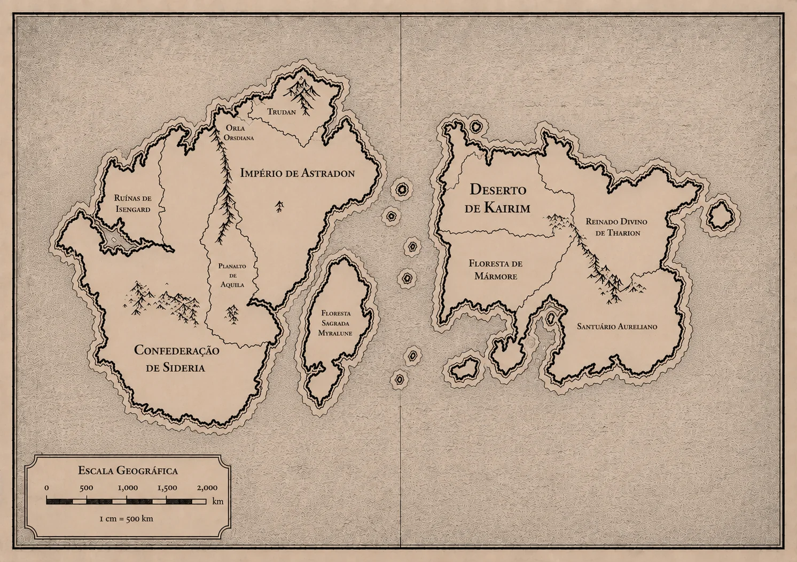
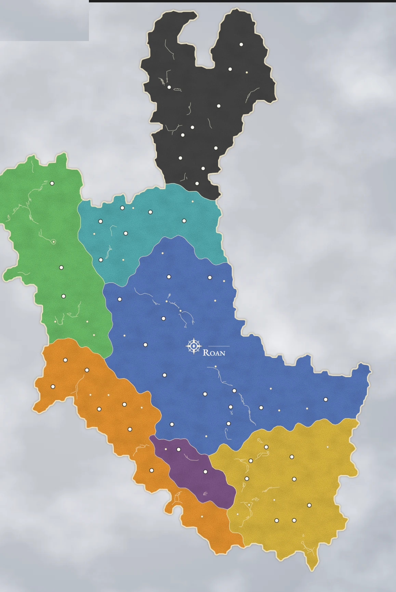

Combate
Crítico: Sucesso e Falha
Sucesso Crítico — Defesa
Defesa vence sem crítico — se o defensor tiver resultado maior, mas não crítico, o atacante acerta, porém o dano não é dobrado.
Ataque de Oportunidade — o defensor pode desferir um Ataque de Oportunidade contra o agressor.
Crítico vs Crítico (Ataque x Defesa)
Defesa maior — o atacante não causa dano; o defensor não recebe o bônus do crítico na rolagem de defesa usada.
Ataque maior — o atacante acerta o alvo, mas o dano não é multiplicado.
Falha Crítica (1 natural)
Ataque — o jogador sofre um Ataque de Oportunidade.
Defesa: Aparar — a arma é desestabilizada; ônus de -2 em ataque e defesa com ela por 1 rodada.
Defesa: Esquivar — o inimigo ganha um Ataque Extra imediato; nenhum lado sofre penalidade extra pela falha crítica.
Falha vs Falha — vence o menor resultado da perícia; nenhum recebe consequências narrativas desconfortáveis ou ofensivas aos dois lados, conforme o contexto.
Cobertura
| Objetos | HP |
|---|---|
| Barril Comum | 5 |
| Mesa | 8 |
| Barricada de Madeira | 12 |
| Carroça | 15 |
| Árvore | 20 |
| Coluna de Pedra | 35 |
| Tipo | Efeito |
|---|---|
| Leve | Pelo menos metade do corpo atrás de obstáculo (barril, mureta, mesa virada) → +1 em defesa |
| Média | Só partes menores expostas, atrás de colunas, árvores, carroças, muros altos → +2 em defesa |
| Total | Corpo completamente oculto (parede, rocha, porta fechada) → não pode ser alvo de ataques à distância; se sofrer ataque em área, +2 em defesa |
Ao chegar a 0 de vida a cobertura é destruída
Flanqueamento
Coordenar um ataque simultâneo de ângulos opostos, forçando o alvo a dividir sua atenção defensiva. Exige posicionamento real e coordenação entre aliados, não apenas narrativa.
Requisitos (todos obrigatórios)
Posição — dois personagens em lados opostos do alvo, em alcance Corpo-a-Corpo.
Pressão ativa — ambos devem ter atacado o alvo no turno anterior ou no atual.
Sem Cobertura Total — o alvo não pode estar em Cobertura Total.
Só corpo-a-corpo — não é possível flanquear com ataques à distância.
Efeito
Ambos os flanqueadores ganham +1 no Teste de Ataque contra o alvo. O alvo pode fazer um teste de Intuição contra a maior CD de Classe entre os flanqueadores — se passar, ninguém recebe o bônus.
Ações
- Mover1 🔶
- Atacar3 🔶
- Desengajar1 🔶
- Teste de Perícia1 🔶
- Arremesso2 🔶
- Trocar Item (Espaço de Equipamento)1 🔶
- (Des)Equipar (Acessório Pequeno)1 🔶
- (Des)Equipar (Acessório Grande)2 🔶
- Trocar Item (Inventário Passivo — P/M/G)2/3/4 🔶
- Tomar Cobertura1 🔶
- Usar consumível em si mesmo1 🔶
- Entregar consumível a um aliado2 🔶
- Utilizar consumível em aliado3 🔶
Ordem de Dano
Ordem de dano fala sobre como o cálculo será realizado: barreira absorve um dano específico, enquanto os outros são "barras" de vida que ficam na frente da vida base.
Concentração
Certos Domínios e Disciplinas exigem foco contínuo do conjurador para permanecerem ativos — qualquer interrupção pode desfazê-los na hora.
Teste — ao sofrer dano com uma habilidade de duração em Concentração ativa, o conjurador testa o atributo secundário da própria classe contra a CD da classe −4.
Falha — encerra a habilidade imediatamente, sem efeitos residuais.
Uma por vez — só uma magia em Concentração por personagem; iniciar outra encerra a anterior automaticamente.
Dano de Queda
| Altura | Dano / Metro |
|---|---|
| 1m – 5m | 1d4 |
| 6m – 10m | 1d6 |
| 11m+ | 1d8 |
Redutível por RD Mágica e Física
Dano de Esmagamento
Calculado pelo dano de queda + mod. do porte
| Porte | Referência | Mod. |
|---|---|---|
| Leve | Menor que uma criatura pequena (ex: carro de brinquedo) | Normal |
| Médio | Tamanho humano (ex: bicicleta) | +50% (A.P.B) |
| Massivo | Grande ou maior (ex: carro ou ônibus) | Dano Dobrado |
Redutível apenas por RD Física
Tabela de DeathSave
PV Negativa e DS
Dobro da Vida Máxima = 💀
Exaustão
- N1: PA Máximos = -2. Remove em Descanso Curto
- ↓
- N2: Regen. de PA/Rodada -2. Remove em Descanso Curto
- ↓
- N3: -1 em todo teste e Desloc./2. Remove em Descanso Médio
- ↓
- N4: PA Máximos/2. Remove em Descanso Longo
- ↓
- N5: Desmaio. Remove em Descanso Longo
Dano Máximo de Armas
Ao causar o dano máximo possível com a arma, aplica-se o efeito do tipo:
| Tipo | Efeito |
|---|---|
| Cortante | Sangramento por 2 turnos |
| Perfurante | Metade do dano base vira Dano Verdadeiro |
| Contundente | Aplica Fragilizado por 2 turnos |
| Mágico | Recupera 1d4 de Éter |
| Rompedor | Resistências do alvo −1d4 por 3 turnos |
Tabela de Dificuldade de Testes
| CD | Dificuldade | O que representa | Exemplos |
|---|---|---|---|
| 5 | Trivial | Só falha com azar extremo ou distração. Não deveria nem pedir rolagem na maioria das vezes. | Pular uma poça, lembrar o nome de um NPC recorrente, notar que uma porta está trancada. |
| 10 | Fácil | Qualquer um com um mínimo de aptidão passa quase sempre; só complica para quem tem o atributo Fraco naquilo. | Convencer um guarda desatento a deixar você passar, escalar uma parede baixa e rachada, negociar um desconto pequeno com um mercador de bom humor. |
| 15 | Médio | Exige alguma competência real; um personagem sem treino tem chance de errar. | Convencer um nobre cético de uma mentira plausível, saltar um abismo de uns 3m com impulso, decifrar uma inscrição arcana comum, acalmar uma multidão levemente hostil. |
| 20 | Difícil | Precisa de treino, especialização ou ajuda de item/magia. Um leigo praticamente não passa. | Convencer um nobre desconfiado e já com motivo de rancor, saltar um abismo largo sob chuva, escalar uma muralha lisa sem corda, negociar um tratado entre facções rivais. |
| 25 | Muito Difícil | Mesmo treinado, o sucesso não é garantido. | Enganar um espião veterano da Ordo Umbra, atravessar um abismo instável durante um terremoto, seduzir/persuadir um Líder de região a mudar de posição pública, decifrar um grimório em língua morta. |
| 30 | Quase Impossível | Só passa com vantagem, bônus de item, ou talvez um 20 natural. | Convencer um Lorde Poderoso e Maligno a hesitar por um segundo, saltar um abismo colapsando enquanto carrega um aliado ferido, convencer aliados a lutar uma batalha praticamente perdida. |
Condições
Efeitos Negativos — Físicos
- Atordoamento Físico => Tenacidade; incapaz de agir.
- Colapso Físico => Coordenação; sem ações coordenadas (ataque, defesa, desloc., itens).
- Combustão => Sustentar; 2d4 corrosivo a cada 2 turnos, RD geral diminuída em 2d6.
- Congelamento => Tenacidade; travado pela duração ou até sofrer dano; ao sair, -2 atk./def. por 2 turnos.
- Contração => Coordenação; Mestre joga 1d6, em 1–2 a ação é interrompida.
- Derrubado => Coord./Tenacidade; em caído, -2 em def., apenas atk. dist., precisa gastar 1🔶 e Deslocamento/2 para levantar.
- Desarmado => Coordenação; só ataques desarmados no turno, recuperar arma gasta 1🔶/2🔶/3🔶 (peq./méd./grande).
- Desequilíbrio => 1d4: perde 2🔶 / -1 def. 2t / desv. def. 2t / cai (Derrubado).
- Dor => Sustentar; -2 em todos os testes.
- Enfraquecido => Sustentar; dano causado -25%.
- Enraizamento => Tenacidade; deslocamento 0, sem esquiva.
- Envenenamento => Sustentar; 2d6 corrosivo/2 turnos até antídoto.
- Ferida Aberta => Sustentar; +2d6 verdadeiro se atingido na área, até curar.
- Fragilizado => Sustentar; Redução de Dano reduzida pela metade.
- Lentidão => Tenacidade; Deslocamento reduzido pela metade.
- Nocauteado => Tenacidade; inconsciente + Desarmado + Derrubado, +25% dano recebido.
- Paralisia => Sustentar; a cada ação física, teste de Coordenação — falha dá desvantagem + metade do desloc. para aquela ação.
- Restringido => Tenacidade (CD = Atletismo do aplicante); ambos com desvantagem em defesa, só atacam um ao outro.
- Sangramento => 2d4 corrosivo/2 turnos, escala a cada aplicação (2d4→2d6→2d8→2d10); 12 turnos seguidos causa Sangue Perdido.
- Sobrecarga => Peso acima do limite; aplica Lentidão.
- Tremor => Coordenação; desvantagem em ataques de precisão; falha automática em Furto/Artimanha/Armadilha.
Efeitos Positivos
Físicos
- Adrenalina => +1🔶 (Nv.I) ou +2🔶 (Nv.II).
- Ambiente Favorável => +1 em rolagens (vantagem de terreno).
- Imparável => Imune a Derrubado, Enraizamento, Paralisia, Estático e Atord. Físico.
Mentais
- Determinação => Imune a Amedrontado, Atração, Provocado e Intimidação.
- Heroísmo => +1d4 de Inspiração na próxima rolagem.
- Instruído => Bônus = Proficiência do instrutor ÷ 3.
- Prestígio => +2 em Diplomacia e Liderança.
- Motivação => +1 em ações relacionadas àquilo que te motivou.
- Vontade Inabalável => +2 em 1 rolagem + Vantagem (ao chegar a 20% da vida, 1x/descanso médio).
Sensoriais
- Alerta => +2 em Identificação vs. ações furtivas, até o fim do combate.
- Camuflado => +2 em testes de Furtividade.
Espirituais
- Benção Curativa => +2d6 de PV por rodada.
- Fortaleza Espiritual => +2 em Audácia e Acuidade.
- Proteção Divina => +1 em rolagens e 10 de Vida Extra.
- Resiliência => Após 2 falhas seguidas no mesmo teste de resistência: +2 e CD -2 (cumulativo) até ter sucesso.
- Último Suspiro => Ao cair e falhar Sobrevivência: 1 Ato Final com sucesso garantido antes de cair de vez.
- Vampirismo => Recupera vida pelo dano causado — Menor 10% / 15% / Maior 20% (excedente vira Vida Extra; não acumula, usa o maior).
- Égide => Crítico em resistência concede proteção (Física/Sensorial/Mental/Espiritual) que anula até 2 efeitos daquele tipo; perde 1 uso por ativação.
Níveis de Obstrução
| Nível | Visual | Audição | Arcano |
|---|---|---|---|
| I (Interferido) | -2 Percep. em Visão | -2 Percep. em Audição | -2 Percep. em Étermancia |
| II (Comprometido) | Desv. em Visão e Atk. | Desv. em Audição e Perca de Direção Sonora | Desv. em Étermancia |
| III (Perdido) | Cegueira | Surdez | Não pode mais detectar magia |
Faz parte dos três canais sensoriais, e depende do que afetou o personagem — pode ser algo simples, como uma venda, ou barulhos da cidade, até algo realmente permanente, como perder os olhos ou uma magia que afete o éter.
Efeitos Negativos — Mentais
- Amedrontado => Audácia; desvantagem na defesa contra a fonte do medo, não avança contra ela (CD +1 a cada falha).
- Assombrado => Audácia; recua 3m (gera oportunidade).
- Atordoamento Mental => Audácia; incapaz de agir.
- Compelido => Fibra vs. Intimidação/Persuasão; executa 1 ação simples imposta.
- Embriaguez => Sustentar; fica com Tontura e Desequilíbrio até Descanso Curto.
- Encantado => Trata o aplicante como aliado; não pode atacá-lo.
- Hostil => Ataca alvo aleatório (1dn); acalmar = Audácia (n = pessoas no combate).
- Intimidado => Audácia vs. Intimidação; Abalado (-2) / Recuando / Rendido.
- Perturbado => Fibra; -2 em Liderança, Persuasão e Intimidação; aliados próx. (4m) que veem têm -1 num teste (critério do Mestre).
- Provocado => Foca só no aplicante; Audácia (CD = Provocar).
- Surpreendido => Perde o 1º turno após a rolagem de Iniciativa.
- Torpor => Audácia; a cada ação física, teste de Coordenação ou paga +1🔶 e -2 no teste.
Efeitos Negativos — Sensoriais
- Atordoamento Sensorial => Lucidez; incapaz de agir.
- Cegueira => Lucidez; antes de atacar/defender, teste de Identificação com desvantagem — se falhar, ataque/defesa também com desvantagem.
- Confusão => Lucidez; -2 em ataque e defesa + desvantagem em Concentração por 3 turnos.
- Desatenção => -2 em testes de Instinto.
- Desestabilizado => Lucidez; falha: 1d4 → -1 em todos os testes (3t) / desv. atk-def (2t) / 1d8 verdadeiro ao atacar ou defender (1 rodada) / Atord. Sensorial (1t).
- Fascinado => Lucidez; desvantagem em Iniciativa, Identificação e Defesa; qualquer dano encerra o efeito.
- Tontura => Lucidez; desvantagem em ataque e defesa.
- Surdez => Lucidez; sem Identificação auditiva, sem direção/distância de sons, não entende comunicação sonora.
Efeitos Negativos — Espirituais
- Atordoamento Espiritual => Acuidade; incapaz de agir.
- Deterioração => Acuidade; incapaz de regenerar vida por qualquer meio.
- Ferida da Alma => Acuidade; parte da Vida Máxima fica selada (sem cura/regeneração) pela duração.
- Fraqueza Espiritual => Acuidade; -2 em Acuidade e Audácia.
- Maldição Degenerativa => Acuidade; -5% da vida máx./rodada até 40%; cessa com oferenda.
- Perda Energética => Acuidade; -1d6 Éter/Estamina a cada 4 turnos.
- Supressão => Acuidade; Nv.I bloqueia Ativas, Nv.II Reflexo, Nv.III todo o Éter.
- Danação => Acuidade; 2d6 corrosivo/2t, escala até 6d6.
- Débito Vital => Acuidade; cura recebida cortada pela metade até o débito zerar.
- Necrose => Acuidade; cura vira dano verdadeiro (ignora tudo); veneno passa a curar.
Perícias & Viagens
Descanso
- Ótima+2 em testes de Instinto e 1d8 de Pontos de Vida extras
- BoaNenhum efeito adicional
- Ruim-2 em Movimento e Identificação Passiva
- PéssimaTodos os efeitos de Ruim e -2 em rolagens de Instinto
| Descanso | Tempo | Recupera |
|---|---|---|
| Curto | 2h | 25% de vida, éter e estamina |
| Médio | 4h | 50% de vida, éter e estamina |
| Longo | 8h | Todos os pontos de vida, éter e estamina |
Deslocamento
| Meio de Transporte | Tempo no Mundo | Tempo IRL |
|---|---|---|
| A Pé | 14 Dias | 2 Dias |
| Cavalo | 7 Dias | 1 Dia |
| Trem | 16 horas | 6 horas |
| Zeppelin | 12 horas | 4 horas |
| Teleporte | Inst. | Inst. |
Perícias Sociais (Carisma)
| Perícia | Uso |
|---|---|
| Atuação | Imitar vozes, disfarçar-se; música, dança, dramaturgia ou oratória |
| Blefe | Manipular verdades, enganar ou omitir informações |
| Diplomacia | Apaziguar conflitos e negociar acordos |
| Intimidação | Impor medo ou respeito por presença ou ameaças |
| Liderança | Inspirar e comandar grupos, elevando moral/eficiência |
| Persuasão | Influenciar, convencer e negociar acordos vantajosos |
| Provocar | Tirar a paciência do alvo, induzindo impulsividade |
Perícias Práticas
| Perícia | Atrib. | Uso |
|---|---|---|
| Armadilha | Destreza | Criar e calibrar a eficiência de uma armadilha |
| Artimanha | Destreza | Truques manuais: trapacear, abrir fechaduras, desarmar armadilhas |
| Campismo | Destreza | Sobreviver ao ar livre: abrigos, itens primitivos, riscos naturais |
| Identificação | Instinto | Reconhecer rastros, objetos, criaturas e padrões no ambiente |
| Iniciativa | Instinto | Agir rápido em combate, garantindo vantagem |
| Natureza | Intelecto | Reconhecer plantas, animais e perigos naturais |
| Sorte | Bônus de Proficiência | Às vezes as coisas simplesmente dão certo |
Perícias Intelectuais
| Perícia | Atrib. | Uso |
|---|---|---|
| Acalmar Animais | Intelecto | Tranquilizar ira/medo de animais com voz e postura |
| Decifrar | Intelecto | Interpretar códigos ou mensagens complexas |
| Dedução | Intelecto | Analisar situações, achar pontos táticos, ligar pistas pela lógica |
| Étermancia | Controle | Sentir energia etérea: rastros arcanos, itens mágicos, irregularidades |
| História | Intelecto | Eventos passados, lendas, folclore e rituais antigos |
| Idiomas | Intelecto | Aprender e entender línguas faladas ou escritas |
| Intuição | Intelecto | Pressentir perigo, mentiras ou intenções por gestos |
| Medicina | Intelecto | Entender organismos vivos e tratar ferimentos |
| Pesquisa | Intelecto | Achar e compreender informações em livros/registros |
| Religião | Intelecto | Símbolos místicos, dogmas e sinais divinos |
Perícias Físicas
| Perícia | Atrib. | Uso |
|---|---|---|
| Acrobacia | Destreza | Rolamentos, corridas e saltos para superar obstáculos |
| Atletismo | Físico | Força bruta: carregar peso, escalar, empurrar |
| Fuga | Destreza | Escapar de combates ou despistar inimigos |
| Furtividade | Destreza | Ocultar-se ou passar despercebido |
| Furto | Destreza | Pegar objetos de outros sem que percebam |
| Natação | Vigor | Nadar e resistir ao fluxo da água |
Resistências
O que o personagem suporta, não o que ele faz. Escolhidas por classe na criação, à parte das perícias ativas.
| Resistência | Atrib. | Domínio |
|---|---|---|
| Acuidade | Controle | Efeitos sobre o fluxo etéreo e o espírito |
| Audácia | Intelecto | Ilusões, atordoamento mental, domínio da consciência |
| Coordenação | Destreza | Controle motor e precisão dos movimentos |
| Fibra | Carisma | Encantamentos, compulsões, abalo à vontade e ao ego |
| Lucidez | Instinto | Efeitos que perturbam sentidos e percepção |
| Sustentar | Vigor | Doenças, venenos e efeitos que minam a saúde |
| Tenacidade | Físico | Restrições físicas de movimento e atordoamento |
Biomas
♣ Ermos ♣
🌊 Aquático 🌊
🪨 Subterrâneo 🪨
🏙 Urbano 🏙
Serviços e Preços
Preço de Serviços
| Serviço | Preço |
|---|---|
| Sustento | |
| Refeição simples | 5 Br |
| Refeição farta, com bebida | 20 Br |
| Pernoite em estábulo ou salão comum | 10 Br |
| Quarto privado em estalagem | 40 Br |
| Quarto de luxo, com banho e criadagem | 2 Pr |
| Trabalho e Transporte | |
| Diária de trabalhador braçal | 25 Br |
| Diária de artesão qualificado | 1 Pr |
| Passagem em carroça, por dia de viagem | 30 Br |
| Mensageiro entre distritos | 2 Pr |
| Mula de carga | 15 Pr |
| Cavalo de sela | 40 Pr |
| Ofício e Fé | |
| Identificação de item por estudioso | 5 Pr |
| Bênção de templo (remove doença comum) | 10 Pr |
| Purificação de Maldição Degenerativa | 25 Pr |
| Guia local p/ expedição, por semana | 8 Pr |
Comércio por Local
| Assentamento | Disponível | Preço |
|---|---|---|
| Posto de Estrada | Consumíveis, munição comum, itens de expedição | +20% |
| Vilarejo | Acima, mais armas mundanas e Armadura Leve | +10% |
| Distrito | Todo catálogo Comum, exceto armas etéreas | Referência |
| Capital | Catálogo Comum + itens Raros sob encomenda | Referência |
| Mercado Negro | Qualquer item, sem restrição de raridade | +50% |
Encomenda: item acima do porte do assentamento pode ser encomendado, se houver rota comercial até uma praça que o produza. Custa +50% sobre o preço final; chega em 1d4 dias (1d4 semanas se Raro). Encomenda paga e não retirada continua guardada — nenhum comerciante devolve o sinal.
Pechincha e Abordagem
| Abordagem | Sucesso | Falha |
|---|---|---|
| Persuasão | -10% no total | +10% no total; sem nova pechincha até o próximo Descanso Longo |
| Intimidação | -20% no total | Comerciante encerra a negociação (recusa vender até a relação ter um reparo narrativo) |
CD do Estabelecimento: Ambulante 15 · Loja de Distrito 18 · Casa Comercial 22 · Contrabandista 28
Raridade (multiplica o preço base)
| Raridade | Preço | Durab. Extra | Encantamento |
|---|---|---|---|
| Comum | Base | +0 | 1 |
| Raro | × Multiplicador | +100 | 2 |
| Épico | × Multiplicador | +200 | 3 |
| Lendário | Sem preço, só narrativa | +400 | 3 |
Recompensas por Missão
| Nível de Missão | Elo por Jogador | XP Concedido |
|---|---|---|
| Trivial | 1 Pr | 50 XP |
| Simples | 5 Pr | 150 XP |
| Comum | 15 Pr | 300 XP |
| Média | 30 Pr | 450 XP |
| Perigosa | 100 Pr | 550 XP |
| Elite | 200 Pr | 750 XP |
| Épica | 500 Pr | 950 XP |
| Lendária | 2.000 Pr | 1.500 XP |
Fichas dos Jogadores
Mesa Atual
Consulta Rápida de Ficha
Funciona com qualquer planilha compartilhada como "Qualquer pessoa com o link pode visualizar" — mostra a carta do personagem sem adicioná-lo à mesa.
Gerador de NPC
Dados do NPC
Preencha só o que você já sabe sobre o NPC — o resto é sorteado ao clicar em Gerar, sem apagar o que já estiver escrito.
Mapas
Mapa-Múndi

Confederação de Sideria — Distritos

Clique em uma área do mapa para ver os detalhes do distrito.
Clique no mapa para ampliar · clique nos marcadores dourados para ver detalhes de uma cidade